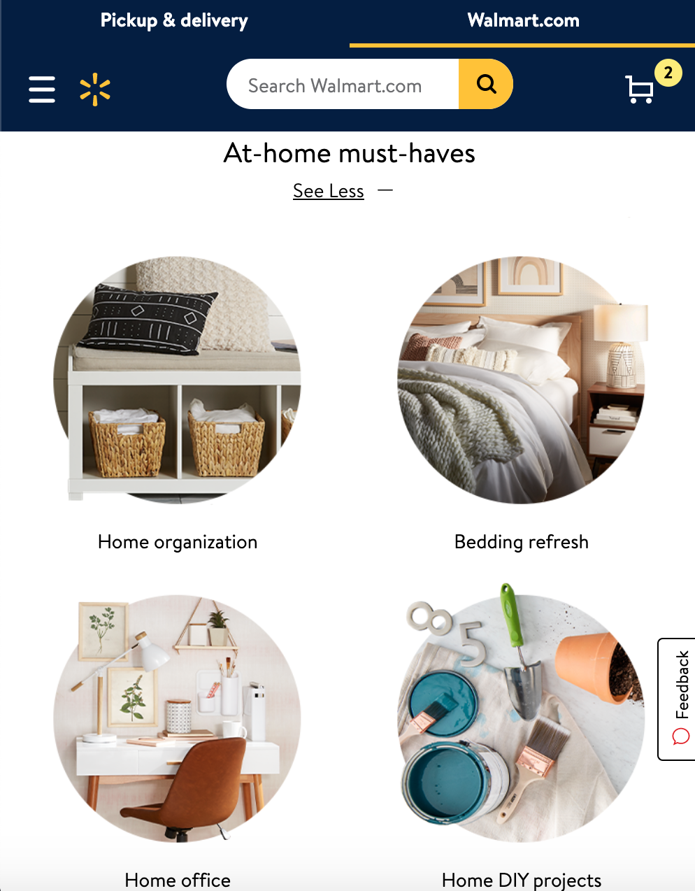

Walmart
REPETITION
Most retail corporations make use of repetition principles well. It helps the users navigate the site fluently, as the familiarity of the design helps. Repetition plays an important role in maximizing user experience.
The New York Times
WHITE SPACE
The New York times has used white space perfectly. The text is easy to read the use of the color white is perfect. The design is easy on the eye as it is simple.
Fantasy Premier League
CONTRAST
Contrast helps the user to focus on important details about a website. It is the font size, contrast, color, and content that attracts the user. This website perfectly demonstrates the contrast principles. The green and white colors complement each other.